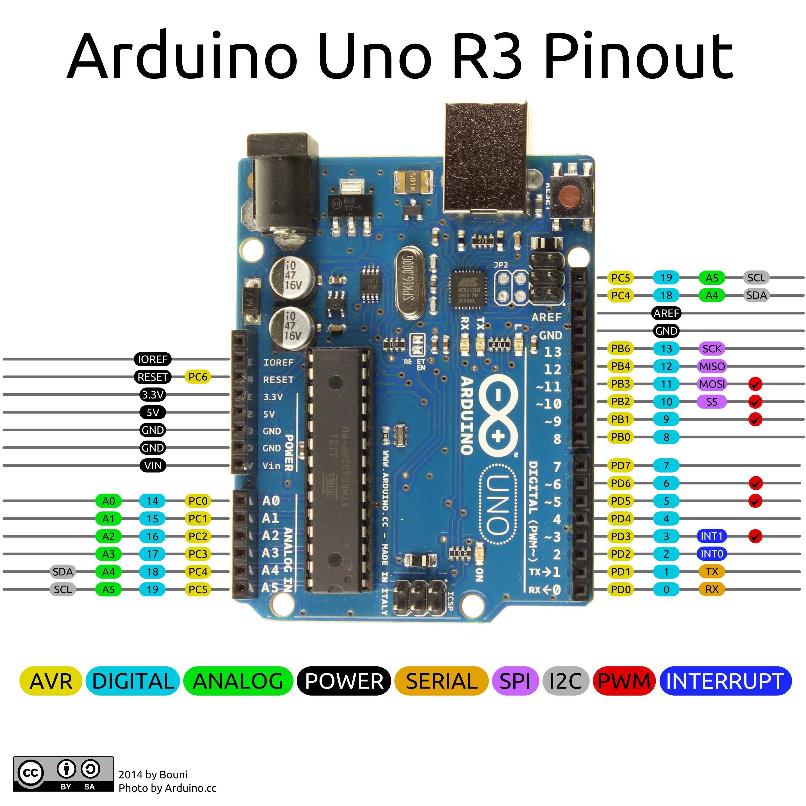

Arduino 实例01.Basic AnalogReadSerial
全部代码：
/*
AnalogReadSerial
Reads an analog input on pin 0, prints the result to the Serial Monitor.
Graphical representation is available using Serial Plotter (Tools > Serial Plotter menu).
Attach the center pin of a potentiometer to pin A0, and the outside pins to +5V and ground.
This example code is in the public domain.
http://www.arduino.cc/en/Tutorial/AnalogReadSerial
*/
// the setup routine runs once when you press reset:
void setup() {
// initialize serial communication at 9600 bits per second:
Serial.begin(9600);
}
// the loop routine runs over and over again forever:
void loop() {
// read the input on analog pin 0:
int sensorValue = analogRead(A0);
// print out the value you read:
Serial.println(sensorValue);
delay(1); // delay in between reads for stability
}
解说
插入设备后，记得选择好你的设备种类：
Arduino > 工具 > 开发板： > 【选择你的设备种类】
我的设备为 Arduino/Genuino Uno。
Arduino > 工具 > 端口：> 【选择你的端口】
setup 函数
将配置的代码写在这里，这里只执行一次。
loop 函数
将主要的代码写在这里，这里会反复执行。
Serial.begin(9600);
将设备串口通信设置为9600。每秒9600比特。
int sensorValue = analogRead(A0);
读取模拟引脚0上的输入。

Serial.println(sensorValue);
为了方便查看，将内容打印到串口上。
Arduino > 工具栏 > 串口监视器。
在这里将会看到打印出来的内容。
delay(1);
意思将会暂停 1毫秒 时间，后再会执行代码下去。
1秒 = 1000毫秒